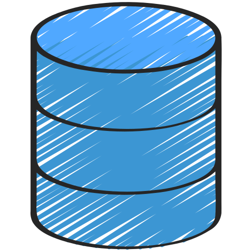

A simple tool to automate the creation of some folders and files for my data science projects
Introduction
Geoffrey is a tool to automate and standardise(ish) the admin in my data science projects by creating folders and common files to speed up project setup and ensure that every project has a similar layout.My general workflow for a data science project consists of 4 steps:
-
 Data sources
Data sources
-
 Exploration
Exploration
- Models
- Products
Geoffrey allows you to create projects and add in each of these 4 components in a modular way.
Quickstart
Installation
You can download the appropriate binary from the installation page or use wget (or something similar).foo@bar:~$ wget -q https://github.com/stats-student/geoffrey-rs/releases/download/v0.2.0/x86_64-unknown-linux-gnu.tar.gz
Then extract geoff from the tar file and if desired move to a folder that is in your PATH
foo@bar:~$ tar -xf x86_64-unknown-linux-gnu.tar.gz
foo@bar:~$ sudo mv x86_64-unknown-linux-gnu/geoff /usr/bin/
Now you can use geoff!
Create a project
foo@bar:~$ geoff create test_project
🚀 test_project created!
test_project
├─ 🖿 data_sources
├─ 🖿 explorations
├─ 🖿 models
├─ 🖿 products
├─ 🗎 README.md
└─ 🗎 project_scoping.md
Add a data source
Add an exploration
Add a model
Add a product

Available binaries
 x86_64-unknown-linux-gnu.tar.gz
x86_64-unknown-linux-gnu.tar.gz
 x86_64-pc-windows-gnu.tar.gz
x86_64-pc-windows-gnu.tar.gz
 x86_64-apple-darwin.tar.gz
x86_64-apple-darwin.tar.gz

geoff
Geoff will listen to your commands and carry out the relevant project admin.
Subcommands
Options
-h, --help
Print help information
-V, --version
Print version information
Examples
foo@bar:~$ geoff create test_project
foo@bar:~$ geoff add exploration some_exploration
foo@bar:~$ geoff build_docs

geoff create
geoff create [OPTIONS] NAME
Creates a new project called NAME and creates the 4 sub directories that geoff manages along with a README and project scoping template.
Arguments
name
The name of the project. This can be a project name or a path with the final directory in the path being the project name.
Project name
foo@bar:~$ geoff create test_project
Project with path
foo@bar:~$ geoff create path/to/test_project
If a path is supplied and the parents of the project name don't exist, the parents either need to be created manually or --parents needs to be supplied.
Options
-p, --parents
Whether to create the parent directories in the project name
--help
Prints help information
Examples
Create a project
foo@bar:~$ geoff create test_project
🚀 test_project created!
test_project
├── 🖿 data_sources
├── 🖿 explorations
├── 🖿 models
├── 🖿 products
├── 🗋 README.md
└── 🗋 project_scoping.md
Create a project and parents of specified path
foo@bar:~$ geoff create --parents path/to/test_project
🚀 test_project created!
test_project
├── 🖿 data_sources
├── 🖿 explorations
├── 🖿 models
├── 🖿 products
├── 🗋 README.md
└── 🗋 project_scoping.md

geoff add
The add subcommand adds an instance of the requested step (data source, exploration, model or product).
Commands
Options
--install-completion
Install completion for the current shell
--show-completion
Show completion for the current shell, to copy it or customize the installation
--help
Shows help message and exits
Examples
foo@bar:~$ geoff add data_source some_data_source
foo@bar:~$ geoff add exploration some_exploration
foo@bar:~$ geoff add model some_model
foo@bar:~$ geoff add product some_product

geoff add data-source
geoff add data-source [OPTIONS] NAME
Adds a new folder in data_sources folder called NAME which contains a metadata markdown document to populate. The metadata file captures some details about the data source and any key people that were involved in the collection or authorisation to access the data.
Data sources
There are three different metadata templates that are created depending on whether the data source is a
 database source
 extract source
extract source
 web download source
web download source
Database source
A database source is used when you have access to the database that holds the data you're extracting. You may still export that data to some other file type or connect to the database directly.
Extract source
An extract source is used when you are reliant on someone else in the business getting some data, potentially cleaning/transforming the data and sending it to you.
Web download source
A web download source is used when you have downloaded some data from a public website e.g kaggle, government websites
Arguments
name
The name of the data sources
Data source name
foo@bar:~$ geoff add data-source iris
If no options are passed a directory is created with an empty metadata.md
Options
--database\-d
Creates a folder for a database data source
--extract\-e
Creates a folder for an extract data source
--web-download\-w
Creates a folder for a web download data source
--help
Shows help message and exits
Examples
Add a data source with no options
foo@bar:~$ geoff add data-source iris
🎯 iris data source added!
🖿 data_sources
└── 🖿 iris
└── 🗋 metadata.md
Add a database data source
foo@bar:~$ geoff add data-source --database iris
🎯 iris data source added!
🖿 data_sources
└── 🖿 iris
└── 🗋 metadata.md
Add a extract data source
foo@bar:~$ geoff add data-source --extract iris
🎯 iris data source added!
🖿 data_sources
└── 🖿 iris
└── 🗋 metadata.md
Add a web download data source
foo@bar:~$ geoff add data-source --web-download iris
🎯 iris data source added!
🖿 data_sources
└── 🖿 iris
└── 🗋 metadata.md

Exploration

Model

Product

Database icons created by juicy_fish - Flaticon
Folder icons created by juicy_fish - Flaticon
 Direct download icons created by juicy_fish - Flaticon
Direct download icons created by juicy_fish - Flaticon
Search icons created by Freepik - Flaticon